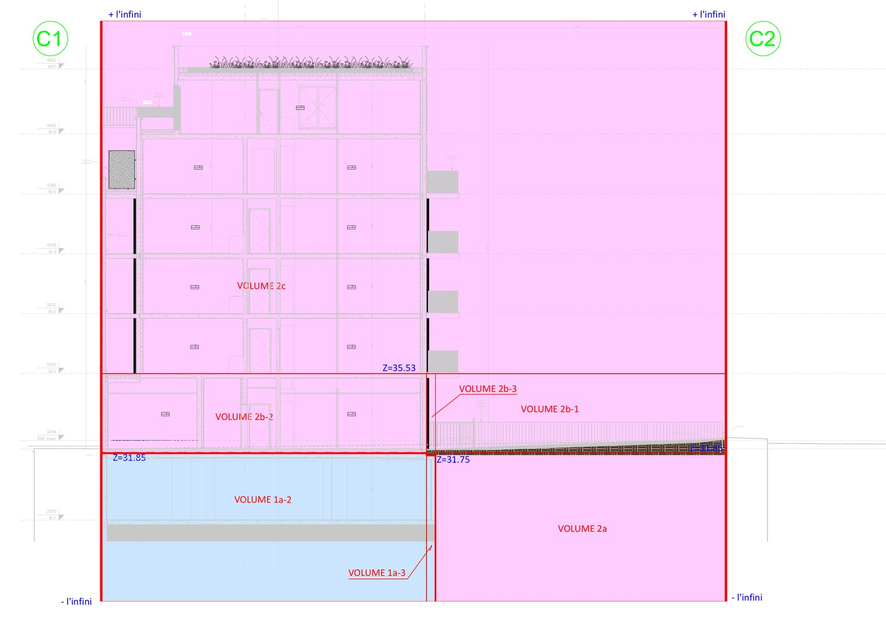
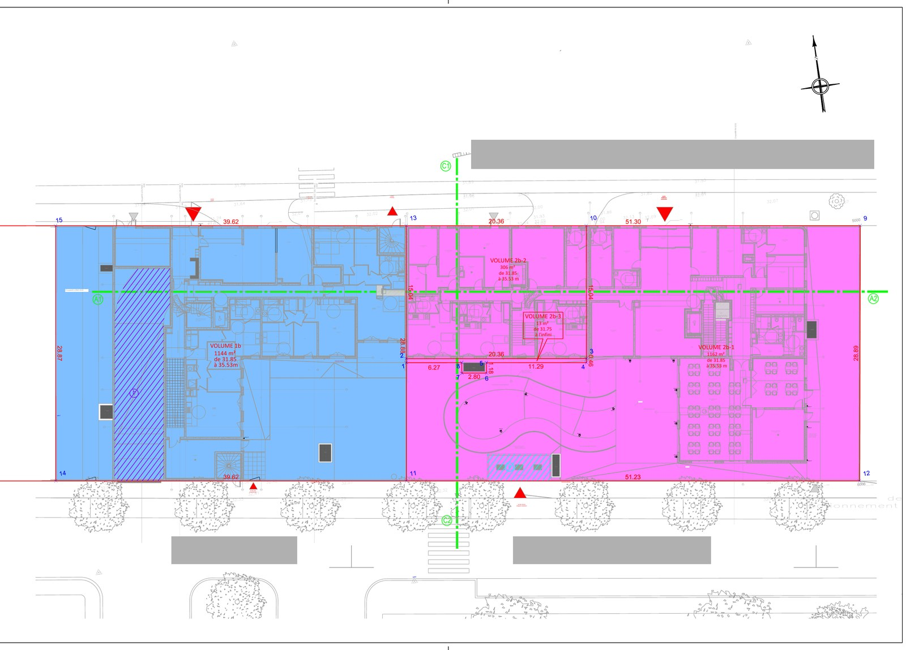

Un régime différent de la copropriété
C'est le point que l'on confond le plus souvent, et la confusion coûte cher. La division en volumes n'est pas une variante de la copropriété : c'est un régime juridique distinct.
En copropriété, chaque lot réunit une partie privative et une quote-part de parties communes indivises. Il y a des tantièmes, un syndicat, un syndic, des assemblées générales.
En division en volumes, rien de tout cela. Chaque volume est une propriété pleine et entière, sans indivision, sans partie commune, sans tantième. Les volumes ne totalisent pas 10 000 : ils existent, simplement, les uns à côté et au-dessus des autres.
Ce qui organise leurs rapports, ce n'est pas un règlement de copropriété mais un ensemble de servitudes réciproques, complété le plus souvent par une structure de gestion commune.
« Je voudrais faire une division en volumes »
C'est la demande que nous recevons le plus souvent sur ce sujet. Et neuf fois sur dix, après examen, ce n'est pas une division en volumes qu'il faut faire : c'est une copropriété.
La confusion est compréhensible. La division en volumes a la réputation d'être plus souple, moins lourde à gérer, sans syndic ni assemblée générale. Beaucoup de gens l'entendent citer et pensent avoir trouvé le moyen d'éviter les contraintes de la copropriété.
Sauf que le régime ne se choisit pas. Il découle de ce que l'on divise. Si le bien s'y prête, la division en volumes est possible ; s'il ne s'y prête pas, aucune rédaction, si habile soit-elle, ne la rendra valable.
Et se tromper n'est pas neutre. Une division en volumes établie sur un bien qui relevait de la copropriété peut être remise en cause par un juge, qui la requalifiera en copropriété — avec cette fois toutes les obligations du régime de 1965, et un montage à refaire. Cela se découvre en général des années plus tard, à l'occasion d'un litige ou d'une vente.
C'est pourquoi nous commençons toujours par cette question, avant même de parler de cotes ou de plans : votre bien relève-t-il vraiment des volumes ?
Les cas où les volumes s'imposent vraiment
Ce ne sont pas des cas exotiques : ils se rencontrent dans chaque opération d'aménagement un peu ambitieuse. Le point commun est toujours le même — des choses de nature différente occupent le même endroit, à des hauteurs différentes.
Une crèche ou une école aménagée au rez-de-chaussée d'un immeuble de logements, propriété de la commune, tandis que les étages appartiennent à un bailleur ou à des particuliers.
Une voie ferrée, un tunnel, une voie publique qui passe sous ou à travers l'opération, et qui relève du domaine public — lequel ne peut pas être mis en copropriété.
Un parking public en sous-sol, sous une résidence privée. Des commerces en pied d'immeuble exploités par une enseigne, sous des bureaux, eux-mêmes sous des logements. Plusieurs bâtiments distincts posés sur une dalle commune.
Dans tous ces cas, imposer une copropriété unique reviendrait à faire siéger ensemble, dans la même assemblée générale, une commune, un exploitant de commerces, un bailleur social et des propriétaires occupants — pour voter sur des équipements qui ne concernent chacun qu'en partie. C'est précisément ce que la division en volumes permet d'éviter.
Ce qu'est un volume
Un volume se définit par une emprise planimétrique et par des limites en altitude. Au-delà de ces limites, la propriété est à quelqu'un d'autre — sauf lorsque le volume s'ouvre vers le tréfonds ou vers le ciel.
Son emprise en plan est délimitée comme une parcelle, par des points et des cotes.
Ses limites en altitude sont exprimées en cotes NGF — le nivellement général de la France — et non en hauteurs relatives : une cote de plancher, une cote de plafond. Elles peuvent aussi rester ouvertes vers le haut ou vers le bas, jusqu'à l'infini. Le rattachement au NGF donne au volume une définition altimétrique durable et retrouvable, des années plus tard, par n'importe quel géomètre-expert.
On parle de tréfonds pour ce qui est en dessous, de surfonds ou de volume zénithal pour ce qui est au-dessus. Un volume peut d'ailleurs être vide : un droit à construire au-dessus d'un bâtiment existant est un volume comme un autre.
Une coupe, et tout devient lisible

L'état descriptif de division en volumes
L'EDDV est la pièce qui décrit chaque volume et le rend identifiable dans les actes. Il est publié au service de la publicité foncière, comme un état descriptif classique.
- La désignation de l'ensemble immobilierLe terrain d'assiette, ses références cadastrales, sa contenance, et la description générale du programme.
- La définition de chaque volumeNuméro, affectation, emprise en plan, cotes NGF de plancher et de plafond, description de ce qu'il contient.
- Les plansPlans de niveau et coupes, qui montrent comment les volumes s'empilent et se recoupent. Sans coupe, un EDDV n'est pas lisible.
- Les servitudes réciproquesAppui et soutien, accès et circulation, passage des réseaux, surplomb, entretien. Chacune est rattachée à un volume servant et à un volume dominant.
- La structure de gestionUn organisme chargé des ouvrages et équipements communs à plusieurs volumes, avec ses statuts et ses clés de répartition. Le plus souvent une association syndicale — ASL ou AFUL — mais ce ne sont pas les seules formes possibles.

Les servitudes, colonne vertébrale du montage
Puisqu'il n'y a pas de parties communes, tout ce qui traverse ou soutient un volume doit être organisé sous forme de servitude. Les servitudes nécessaires au fonctionnement du montage doivent être identifiées et décrites avec précision dans l'acte.
Les plus constantes : la servitude d'appui et de soutien, qui garantit que le volume inférieur portera le volume supérieur ; les servitudes d'accès et de circulation, pour desservir des volumes qui n'ont pas de contact direct avec la voie ; le passage des réseaux dans les gaines et sous-sols ; le surplomb ; et les servitudes d'entretien et d'accès aux ouvrages, pour intervenir sur ce qui traverse le volume d'autrui.
Chacune se décrit, se situe sur les plans et se cote. Un montage en volumes dont les servitudes sont vagues est un montage qui bloquera à la première vente.
La page ServitudesLes questions qu'on nous pose
Puis-je choisir la division en volumes pour éviter le syndic et les assemblées générales ?
Non, et c'est la principale méprise sur ce sujet. Le régime n'est pas une option que l'on retient par confort de gestion : il dépend de la nature du bien. Si votre immeuble comporte des éléments que tout le monde doit partager — hall, escalier, toiture, chaufferie —, il y a des parties communes, donc une copropriété, quelle que soit la rédaction de l'acte.
Ajoutons que la division en volumes n'est pas la solution de facilité qu'on imagine : elle suppose un travail de relevé et de rédaction plus lourd qu'une copropriété classique, et une structure de gestion qui, elle aussi, tient des assemblées et appelle des charges.
Que risque-t-on si le mauvais régime a été retenu ?
Une division en volumes établie sur un bien qui relevait de la copropriété peut être contestée devant le juge et requalifiée en copropriété. L'ensemble se retrouve alors soumis au régime de 1965 — celui-là même que le montage cherchait à écarter — avec un état descriptif à refaire, des tantièmes à établir et un syndicat à constituer.
Le problème apparaît rarement tout de suite. Il se révèle à l'occasion d'une vente, d'un désaccord entre propriétaires ou de travaux importants — c'est-à-dire au pire moment, et souvent bien après que le géomètre-expert et le notaire initiaux ont quitté le dossier.
Y a-t-il des tantièmes en division en volumes ?
Non. C'est la différence la plus nette avec la copropriété. Chaque volume est une propriété pleine, sans quote-part indivise. Les charges de gestion commune sont réparties par les statuts de l'ASL ou de l'AFUL, selon des clés qui leur sont propres — ce ne sont pas des tantièmes au sens de la loi de 1965.
Peut-on diviser en volumes une simple maison ?
En principe non, et ce serait une mauvaise idée. La division en volumes est faite pour les ensembles immobiliers complexes. Pour une maison partagée entre deux propriétaires, la copropriété est le régime adapté — et si les bâtis peuvent être séparés au sol, la division parcellaire est encore préférable.
Un volume peut-il être vendu séparément ?
Oui, c'est même l'intérêt du montage. Chaque volume constitue une propriété distincte, qui se vend, s'hypothèque et se transmet de façon autonome, avec les servitudes qui lui sont attachées.
Peut-on passer d'une copropriété à une division en volumes ?
C'est possible, mais seulement dans certains cas. Il faut un ensemble composé de plusieurs bâtiments distincts, ou d'entités bien séparées ayant des usages différents et pouvant fonctionner chacune de son côté. En revanche, un bâtiment unique ne peut pas être découpé en volumes : la loi l'interdit expressément. C'est le point qui bloque le plus souvent les projets qu'on nous soumet. L'opération suppose ensuite un montage entièrement nouveau, avec un état descriptif publié, et se prépare avec le notaire.
Faut-il un géomètre-expert pour un EDDV ?
La définition des volumes suppose de délimiter des emprises et de fixer des cotes altimétriques rattachées au NGF. C'est un travail de mesure et de délimitation, qui engage la consistance même des propriétés créées. Le géomètre-expert définit les volumes, établit l'état descriptif, les plans et les coupes, et peut, selon la mission, définir les servitudes, rédiger le cahier des charges et élaborer les statuts de l'organisme de gestion. Le notaire reçoit l'acte et assure les formalités de publicité foncière. Les deux interventions sont complémentaires.
Un projet en volumes ?
Le cabinet intervient à Mantes-la-Jolie, à Limay et dans toute la vallée de la Seine. Qu'il s'agisse d'établir un EDDV ou de relire un projet avant signature, décrivez-nous l'ensemble immobilier : nous vous dirons si le régime des volumes est le bon, et ce qu'il suppose de relever.
Les textes, pour qui veut vérifier
Tout ce qui précède est écrit en langage courant. Voici, pour ceux que cela intéresse, les textes exacts sur lesquels chaque point s'appuie. Les liens renvoient vers Légifrance et vers l'Ordre des géomètres-experts.
D'où vient la division en volumes ?
D'aucun texte fondateur propre : c'est une construction de la pratique notariale et de la jurisprudence. Elle s'appuie sur le droit de propriété du Code civil — article 544 (la propriété est le droit de jouir et disposer des choses de la manière la plus absolue) et article 552 (la propriété du sol emporte la propriété du dessus et du dessous) — ainsi que sur le régime des servitudes, articles 637 et suivants.
Comment écarte-t-on le statut de la copropriété ?
Par l'article 1er II de la loi n° 65-557 du 10 juillet 1965, dans sa rédaction issue de l'ordonnance du 30 octobre 2019 : le statut de la copropriété s'applique « à défaut de convention y dérogeant expressément et mettant en place une organisation dotée de la personnalité morale et suffisamment structurée pour assurer la gestion de leurs éléments et services communs ». Les conditions sont cumulatives — une simple mention dans l'acte ne suffit pas.
Pourquoi un bâtiment unique ne peut-il pas être divisé en volumes ?
L'article 28 IV de la loi du 10 juillet 1965 encadre la scission d'une copropriété en volumes : elle vise les ensembles immobiliers complexes comportant plusieurs bâtiments distincts sur dalle, ou des entités homogènes affectées à des usages différents, chacune pouvant fonctionner de manière autonome. Le texte précise que cette procédure « ne peut en aucun cas être employée pour la division en volumes d'un bâtiment unique ».
La cour d'appel d'Aix-en-Provence a précisé ce qu'il faut entendre par bâtiment unique : une conception architecturale homogène, des fondations communes et des accès communs (28 mars 2017, n° 15/14766).
Précision honnête : la portée de cette interdiction en dehors de la scission d'une copropriété existante reste discutée. La cour d'appel d'Aix-en-Provence l'a étendue au-delà ; la cour d'appel de Lyon l'a au contraire cantonnée à la seule scission (25 avril 2023, n° 20/03480). La Cour de cassation ne s'est pas prononcée de façon définitive. En pratique, nous déconseillons de bâtir un montage sur ce point de désaccord.
Copropriété ou volumes : sur quoi le juge se fonde-t-il ?
Sur l'existence, ou non, de parties communes indivises. La Cour de cassation a écarté la notion de « copropriété en volumes » : les deux régimes s'excluent, le second reposant sur l'autonomie des propriétés superposées, incompatible avec l'indivision qu'implique le premier (Cass. 3e civ., 8 septembre 2010, n° 09-15.554).
À l'inverse, en présence de biens imbriqués mais dépourvus de parties communes dans les titres, les juges n'imposent pas le régime de la copropriété (même arrêt).
La requalification a été prononcée, notamment, faute d'une organisation suffisante de la gestion de l'ensemble immobilier (TGI Paris, 15 mai 2003, n° 8317) — ce qui rejoint la condition posée aujourd'hui par l'article 1er II de la loi de 1965.
ASL et AFUL : quels textes ?
Les associations syndicales de propriétaires relèvent de l'ordonnance n° 2004-632 du 1er juillet 2004. Son article 7 pose que l'association syndicale libre se constitue par le consentement écrit et unanime des propriétaires. Son article 3 précise que les droits et obligations qui en découlent sont attachés aux immeubles et les suivent en quelque main qu'ils passent, l'acquéreur étant subrogé dans les droits et obligations du vendeur.
L'objet des associations foncières urbaines est fixé par l'article L. 322-2 du code de l'urbanisme, qui vise notamment « la construction, l'entretien et la gestion d'ouvrages d'intérêt collectif tels que voirie, aires de stationnement, et garages enterrés ou non, chauffage collectif, espaces verts plantés ou non, installations de jeux, de repos ou d'agrément ».
Le rattachement NGF et le rôle du géomètre-expert
La méthodologie de l'Ordre des géomètres-experts décrit la division en volumes comme une division de droits de propriété sans indivision, géoréférencés en planimétrie et en altimétrie, avec pour un immeuble existant un nivellement rattaché au NGF, des plans par niveaux et des coupes. Elle prévoit également que le géomètre-expert peut, selon la mission, définir les servitudes, rédiger le cahier des charges et élaborer les statuts de l'organisme de gestion.
Cette intervention s'inscrit dans le cadre défini par l'article 1er de la loi n° 46-942 du 7 mai 1946 instituant l'Ordre des géomètres-experts, relatif aux plans et documents qui fixent les limites des biens fonciers et les droits attachés à la propriété foncière.
Ces éléments sont donnés à titre d'information générale, à jour à la date de mise en ligne. Ils ne remplacent ni l'examen de votre dossier, ni le conseil de votre notaire.